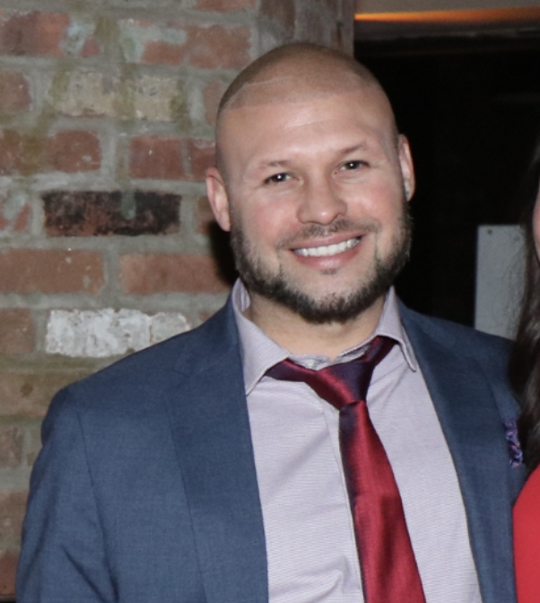

About Me
A bootcamp student of EDX and UT Austin. Native New Yorker based out of the Austin, Texas area who is passionate about the prospect of new career in the exciting and always evolving field of Web development. On this page you can find links to my current work and see the growth from my earliest repositories.